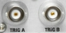

TRIG A, TRIG B Connector
 |
TRIG A/B are BNC connectors for trigger input or output signals.
Input signal: An external trigger input signal must be an LVTTL/LVCMOS (3.3 V) signal with a rise/fall time below 5 ns. The trigger input is high impedance.
Output signal: The trigger output has an LVTTL/LVCMOS (3.3 V) signal. The output impedance is approximately 50 Ω.
For settings, see "Trigger".